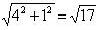
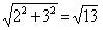
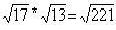

Multiplying two complex
numbers, by Ian at age 12
To multiply two complex numbers like
(4 + i) * (2 + 3 i), just multiply their lengths and add
their angles. See the diagram below.
The length of 4 + i = 
The length of 2 + 3 i =  and 
The angles are 14°= tan-1
(b/a) = tan-1(1/4), and 56°=
tan-1(3/2) and 14° +
56° = 70°. So (4 + i) * (2 + 3 i) is a complex
number whose length is  and
angle is 70°. Using the distributive law (4 + i) * (2
+ 3 i) = 4* (2 + 3 i) + i * (2
+ 3 i) = 8 + 12 i + -3 + 2 i = 5
+ 14 i.
and
angle is 70°. Using the distributive law (4 + i) * (2
+ 3 i) = 4* (2 + 3 i) + i * (2
+ 3 i) = 8 + 12 i + -3 + 2 i = 5
+ 14 i.
On the graph 4* (2 + 3 i) has
length 4 times (2 + 3 i), and i * (2
+ 3 i) takes  and its angle is 70° (= tan-1(14/5)).
and its angle is 70° (= tan-1(14/5)).